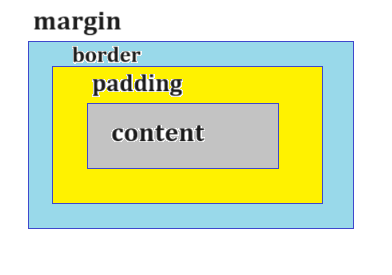

CSS Box Model
CSS ボックス モデルは、Web ページ上の要素のレイアウトを制御する基本的な概念です。すべての HTML 要素は長方形のボックスとして表示され、以下に示す 4 つの主要なコンポーネントで構成されます。
- content (コンテンツ)
- padding (パディング)
- border (ボーダー)
- margin (マージン)

1. content (コンテンツ)
コンテンツ領域には、テキスト、画像、その他のメディアなど、実際のコンテンツが含まれます。 そのサイズは、幅と高さのプロパティによって決まります。
3. Border
パディングの周囲の境界です。
さまざまなスタイル、色、幅でカスタマイズできます。
速記法
ボーダーの短縮表記には、幅、スタイル、色という 3 つのプロパティがあります。border プロパティによって定義します。境界線の幅、境界線のスタイル、境界線の色を指定できます。
例：
説明：
「rei」クラスの HTML 要素を考えてみましょう。
<div class="rei">LearnFreely</div>
CSSでパディングを適用します。
css
.rei {
border: 1px solid #3498db;
}
結果：
- 2px: 境界線の幅を設定します。
- solid: 境界線のスタイルを設定します。境界線には、none (なし)、hidden (非表示)、dotted (点線)、solid (実線)、double (二重)、groove (溝)、ridge(尾根)、inset (インセット)、outset(アウトセット)など、さまざまなスタイルがあります。下の画像を確認してください。
- color: 境界線の色プロパティは境界線の色を設定します。 色を設定するには、色名、hex、rgb、または hsl を使用できます。
境界線スタイルの種類
border: 2pxnone black;
border: 2pxdottedgreen;
border: 2pxdashed#ffbf00;
border: 1pxsolid#3498db;
border: 3pxdoubleblack;
border: 2pxgroovergb(16, 224, 162);
border: 2pxridgepink;
border: 2pxinsetrgb(0, 135, 0);
border: 5pxoutset#1de20f;
border: 2pxhiddenblack;
次のプロパティを使用して、各辺の境界線をカスタマイズできます。
- border-top (境界線上)
- border-right （境界線右)
- border-bottom (境界線下)
- border-left (境界線左)
例えば：
css
.rei {
border-top: 2px solid green;
width: 80px;
}
結果：
境界線を個別に設定
境界線を個別に設定できます。
CSS 境界線のさまざまなプロパティを次に示します。
- border-style (スタイル)
- border-color (色)
- border-width (幅)
- border-radius (半径)
例を見ていきましょう
まずは、スタイル、幅、色の例を見て見ましょう
css
.rei {
border-style: dotted;
border-color: green;
border-width: 2px;
}
結果：
border-radius
境界線の半径は、ボタンや画像などの要素に丸い境界線を作成するのに利用します。
css
.rei {
border-style: dotted;
border-color: green;
border-width: 2px;
border-radius: 20px;
}
結果：
丸いボタンを作成したい場合は、境界線の半径を 50% に設定します。
Margin マージン
意味: マージンは、要素の境界線の外側の周囲のスペースです。
目的: マージンは 2 つの要素の境界線の間のスペースを開けるために利用します。
構文化する方法がいくつかあります。
- 簡単な方法
- 速記法
- 個別の方法
1. 簡単な方法
すべての辺のマージンを同じ値に設定する場合は、この構文を使用します。
- 四辺のマージンを 20 ピクセルに設定しています。
結果：
2. 速記法
すべてのマージンを一度に設定するための簡略表記。すべての辺のマージンを一度に異なる値に設定する場合は、この構文を使用します。
css
.rei {
margin: 上 右 下 左;
}
例えば：
css
.rei {
margin: 20px 10px 30px 40px;
}
- 20px: これは上部マージンが 20 ピクセルであることを表します。
- 10px: これは右側のマージンが 10px であることを表します。
- 30px: これは下側のマージンが 30px であることを表します。
- 40px: これは左側のマージンが 40px であることを表します。
結果：
3. 個別の方法
個別にマージンを設定する場合は、以下のプロパティを使用します。
- margin-top マージン上
- margin-right マージン右
- margin-bottom マージン下
- margin-left マージン左
例えば：
css
.rei {
margin-top: 20px;
margin-right: 10px;
margin-bottom: 30px;
margin-left: 40px;
}
結果：
上辺と左辺のみにマージンを設定する例も見てみましょう。
css
.rei {
margin-top: 20px;
margin-left: 40px;
}
結果：